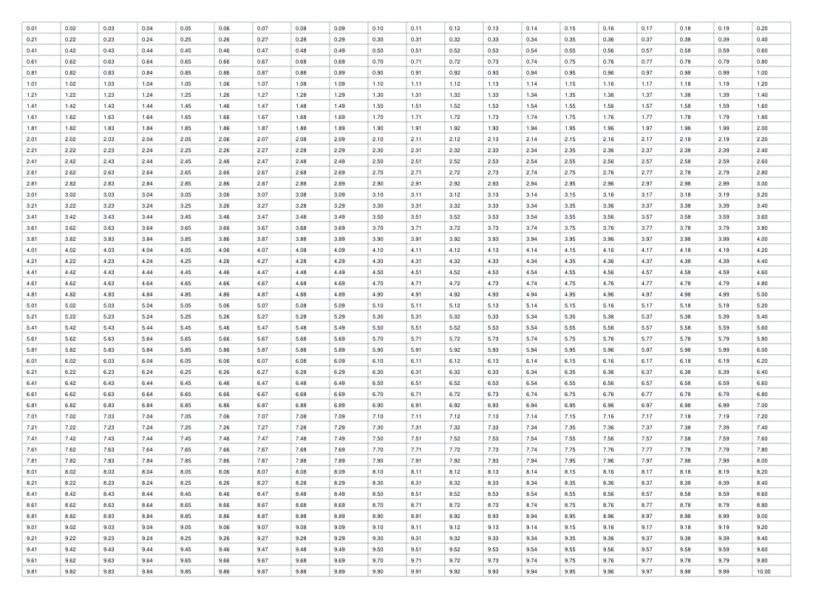

§ 重點
一眼看懂
- 要解決
報表由 Excel 輸出成 PDF，單份兩萬多格；一格錯，下游計算就錯。
- 流程
- 讀表格讀 PDF 文字層與座標，OpenCV 補格線。
- 三讀交叉文字層、字形、GPU OCR 一致才放行。
- 盲讀抽查視覺模型只看 PDF 圖像，按風險抽查。
- 人手確認可疑格以 PDF 為準，答案存入字典。
- 成果
- 16 小時 → 30 分鐘
- 原始讀數 425／22,766 格錯，交付前全部改正；抽查準確率 99.9%（風險抽樣、獨立視覺模型盲核）
- 已用於 30 多份文件
- 工具
- PyMuPDF
- OpenCV
- RapidOCR
- openpyxl
§ 試用
親手試用

查看全部 20 頁及覆核測試
示例表共 20,000 格，文字層與指定選區測試全部吻合。

原 PDF 第 1 頁。切換頁數可對照相同頁的 Excel 輸出。
點選儲存格查看位置及實際數值，橫向捲動可看全部 20 欄。
遇到疑點，怎樣處理？
欄名疑點覆核
示例例子：影像辨識讀出 Mx-x，但這類欄名的 x／y 容易混淆。原程式保留讀值，交人回看原圖。
- 觸發：影像讀值符合容易混淆的欄名規則。
- Python：
needs_review標記待人覆核，不猜成另一個欄名。 - 修正：人回看來源及欄位關係，確認後才修改或保留。
原函數已用三個示例儲存格測試。此互動展示已儲存的判斷，沒有即時執行 OCR。查看測試紀錄 ↗
交付前，逐格驗收
一張表看起來完整，仍可能有數字被存成文字，或落在隔壁一欄。我用有標準答案的測試表，把輸出的格位、資料型別和數值逐一比對。
你可以在瀏覽器讀取原程式匯出的 Excel，重跑這項檢查。
下載同一份 Excel ↓20 頁 × 50 行 × 20 欄
按下核對後，逐頁檢查 Excel。
原轉換測試紀錄 ↗ 測試範圍為已指定選區的文字型 PDF。掃描件及 OCR 需另行驗證。§ 問題問題與限制
- 報表由 Excel 輸出成 PDF，單份兩萬多格；一格錯，下游計算就錯。
- 來源有三種：有文字層、輪廓字或圖像、CAD 圖紙。
- 資料流：原始 PDF 和 App 全部在本機處理；只有抽查格的截圖交雲端視覺模型盲讀。
§ 做法做法細節
以往：同事試過商用 OCR，效果差，之後仍要逐格人手覆核，平均兩個工作天（16 小時）才交到一份。
App 架構
- 形式
- Flask 本機 App 打包成 exe，雙擊就在瀏覽器打開；檔案留在本機。
- 圈表
- 在頁面預覽上用多邊形或長方形圈出表格；同一個表分幾段印，逐段圈選後自動接成一個寬表；不圈則自動偵測整份。
- 三類
- 文字層 PDF 直接讀文字和座標；輪廓字或圖像 PDF 按字形歸類；CAD 圖紙（零寬度線、SHX 筆劃字）走另一條 CAD 流程。
三個讀法交叉
- 讀法一
- 圖形引擎讀出文字和座標，OpenCV 補回缺失的格線。
- 讀法二
- 用文件本身的字型把每個數值重畫一次，與原圖比對；另一個讀法更像原圖就自動更正（例如 3 被讀成 8）。
- 讀法三
- 本機 OCR（RapidOCR 配 ONNX Runtime GPU）獨立再讀一次。
- 放行
- 三個讀法一致才放行，不一致的格標為可疑。
CAD 圖紙
- 加粗
- 先把零寬度細線加粗，令圖面可讀。
- 讀字
- 按筆劃形狀讀字，同一形狀就是同一個字，所以數字精確。
- 砌格
- 由線框砌出儲存格，合併分段表格和合併格；表頭按記住的別名配對，配不到才標可疑。
AI 覆核與學習
- 字形
- 全份文件的字形按外形歸類，每組只確認一次；改正一次，幾百個相同字形一起更新。
- 盲讀
- 可疑格切成編號截圖，AI 在看不到 App 數值的情況下抄寫，再由程式比對。
- 標色
- Excel 以藍色標「AI 已修改」，黃／紅色標「仍不確定」；Report 工作表列出所有標記格和加總核對結果。
- 學習
- 確認過的字形和表頭別名存入字典，下次同類文件自動套用；改規則後用舊文件跑回歸測試。
架構：模型、程式與人手的分工
- 程式讀版面
讀文字層與座標，OpenCV 補格線。
- 模型OCR
本機 GPU 跑 RapidOCR，作第三個讀法。
- 程式三讀法比對
三個讀法一致才放行，不一致標為可疑。
- 模型盲讀抽查
獨立視覺模型只看 PDF 圖像，按風險抽查。
- 程式加總與回歸
SUM／TOTAL 欄加總核對；改規則後逐格回歸。
- 人手確認差異
人以 PDF 為準確認，答案存入字形字典。
模型與成本
每一步用甚麼、省在哪裏。一份約 20,000 格的報表，實際 API 費用約 HK$2。
| 步驟 | 用甚麼 | 為甚麼 | 省在哪裏 |
|---|---|---|---|
| 讀數字 | 程式文字層；沒有就做字形比對 | 一份約 40 種字形，每種只認一次 | 不呼叫模型 |
| OCR | 本機模型本機 GPU 跑 RapidOCR | 第三個讀法 | 40 秒 → 2.3 秒，不用雲端 |
| 比對與加總 | 程式三讀一致才放行；欄加總核對 | 程式先找出能找的錯 | 只把可疑格交下一步 |
| 盲讀抽查 | 雲端視覺模型獨立視覺模型 | 按風險抽查，錯了才擴大 | 全格覆核成本約 20 倍 |
| 確認差異 | 人手人按 PDF 確認 | 答案存入字典 | 同一字形下次直接用 |
關鍵決定與取捨
採用按風險抽查
不採用每格都用視覺模型覆核
全格覆核的 API 成本約為抽查的 20 倍。
採用三個讀法交叉
不採用只靠一個 OCR
OCR 對細小數字最弱。
採用盲讀
不採用讓 AI 看著 App 結果確認
讀者看不到 App 數值，才不會被帶偏。
採用GPU OCR
不採用CPU OCR
1,800 格由約 40 秒降到 2.3 秒。
# ocr3.py：三個讀法（圖形引擎、字型重畫、OCR）逐格比對
if same:
info["agree"] += 1
if getattr(c, "fit_ok", False) and c.chk != "bad":
c.conf = max(c.conf, 0.95) # three readers agree
c.chk = "ok|" + t
elif (getattr(c, "fit_ok", False) or not font_known) and c.chk != "bad":
# 只有 OCR 不同，而引擎與字型重畫一致：OCR 對細小數字最弱，只記錄、不標紅
c.chk = "ocr_only"
c.third = r
else:
c.conf = min(c.conf, 0.2)
c.chk = "bad" # 可疑：交人以 PDF 為準確認
info["flagged"] += 1設計決定：只有三個讀法一致才給高把握，不一致的格交盲測核對；並用已核對的文件做逐格回歸。
§ 結果實際成果與量度方法
一份核實無誤的 Excel 由平均 16 小時縮至約 30 分鐘；工程師已用於 30 多份文件。
抽查準確率 99.9%：交付前的 Excel 經 AI 風險抽查並改正後的準確率；抽中錯誤即擴大至整欄、整表或整份。1
註
- 量度方法每份文件的必讀（高風險）格全部盲讀，其餘數字格分層抽 10%（最少 300 格、最多 3,000 格）；抽樣錯誤超過 5 格即整份全格盲讀（audit_plan.py：SAMPLE_PCT 0.10、SAMPLE_MIN 300、SAMPLE_MAX 3000、MAX_SAMPLE_ERRORS 5）。 ↩
評估：原始錯誤與抽查準確率
App 原始讀數會錯：最大一份 22,766 格全格盲讀，原始讀數有 425 處錯，交付前全部改正。99.9% 是改正後交付時的抽查準確率。App 用調校過的 OCR 和字形比對讀出數值，這一步本身會有錯，所以交付前要抽查。抽查由獨立視覺模型負責（風險抽樣、盲核），只看 PDF 圖像，看不到 App 數值；抽中錯誤即擴大範圍並改正。
- 01必讀格高風險格全部盲讀
- 02分層隨機抽樣其餘數字格抽 10%
- 03升級抽中錯誤即擴大範圍
01必讀格
- 文字、表頭及單位格
- App 標為可疑的格
- 違反欄關係（A + B = C）的格
- 兩個 OCR 讀法不同的格
02分層隨機抽樣
- 最少 300 格、最多 3,000 格
03升級
- 一格錯 → 讀整欄
- 多欄錯 → 讀整表
- 錯誤超過 5 格 → 整份全讀
- 22,766 格
最大一份全格盲讀：App 原始讀數有 425 處錯，交付前已全部改正。
- 0 差異
另一份 7,695 格全格盲讀。
- 160 → 2
學習迴圈第一輪後，同一份文件的可疑格數。
- 0 靜默錯誤
新規則抽樣：77 個文字格錯誤全部被標為可疑。
掃描件及錯位表格會轉為人手盲讀。
§ 限制失敗情況與防護
| 可能出錯 | 防護 |
|---|---|
| 掃描件、表格錯位 | 整份轉人手盲讀，不交 App 結果。 |
| 小數點被 OCR 吃掉 | 改比數字串，相同才算一致。 |
| App 錯了卻沒有標出 | 盲讀加欄加總雙重檢查。 |
| 改規則後舊文件變差 | 用已核對文件逐格回歸。 |